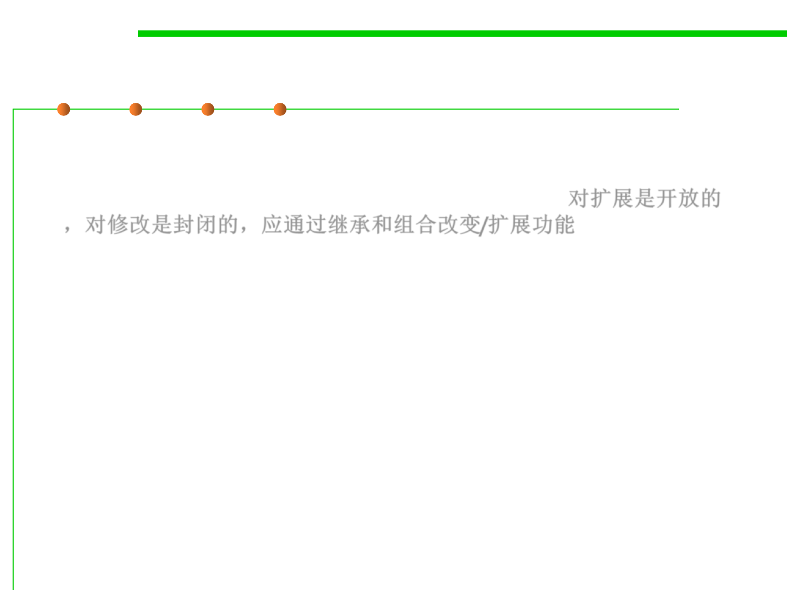

6.1 Metrics and Construction Principles for Maintainability
Open Closed Principle
▪ “Software entities (classes, modules, functions, etc.) should be
open for extension, but closed for modification“, i.e., change a
class‘ behavior using inheritance and composition 对扩展是开放的
，对修改是封闭的，应通过继承和组合改变/扩展功能
▪ Modules should be open and closed.
▪ Definitions:
– Open module: May be extended.
– Closed module: Usable by clients. May be approved, baselined and (if
program unit) compiled.
▪ The rationales are complementary:
– For closing a module (manager’s perspective): Clients need it now.
– For keeping modules open (developer’s perspective): One frequently
overlooks aspects of the problem.